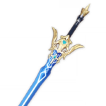
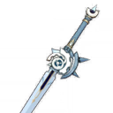

Кадзуха

Может использоваться в качестве основного атакующего героя, но лучше всего подходит для роли "Побочный урон". Хотя Кадзуха может в одиночку нанести много урона, лучше использовать его для повышении уровня мастерства стихий всей вашей команды.
Билд "Поддержка Анемо"
Оружие
Клятва свободы
Увеличивает урон на 10/12,5/15/17,5/20%. Когда владелец оружия вызывает реакцию стихий, он получает Талисман воодушевления. Этот эффект срабатывает 1 раз в 0,5 секунды, при этом он активируется, даже если хозяина оружия нет на поле боя.
После получения двух Талисманов воодушевления, талисманы тратятся, и все ближайшие члены группы получают эффект Тысячелетнее движение: Песнь сопротивления на 12 секунд. Он увеличивает урон обычных и заряженных атак на 16/20/24/28/32% и силу атаки на 20/25/30/35/40%.
или
Амэнома Кагэути
Нанесение урона стихий увеличивает весь урон на 6/7,5/9/10,5/12% на 6 секунд. Максимум 2 стека. Может срабатывать только 1 раз в 1 секунду.
Артефакты
Изумрудная тень

(2) +15% к урону от ветра
(4) Увеличивает урон Вихря на 60%.
Рекомендуемые характеристики артефактов
Основные

Мастерство стихий / Восстановление энергии

Урон Анемо

Критический урон / Шанс критического попадания
Второстепенные
- 1.Атака%
- 2.Критический урон
- 3.Шанс критического попадания
- 4.Мастерство стихий
- 5.Восстановление энергии